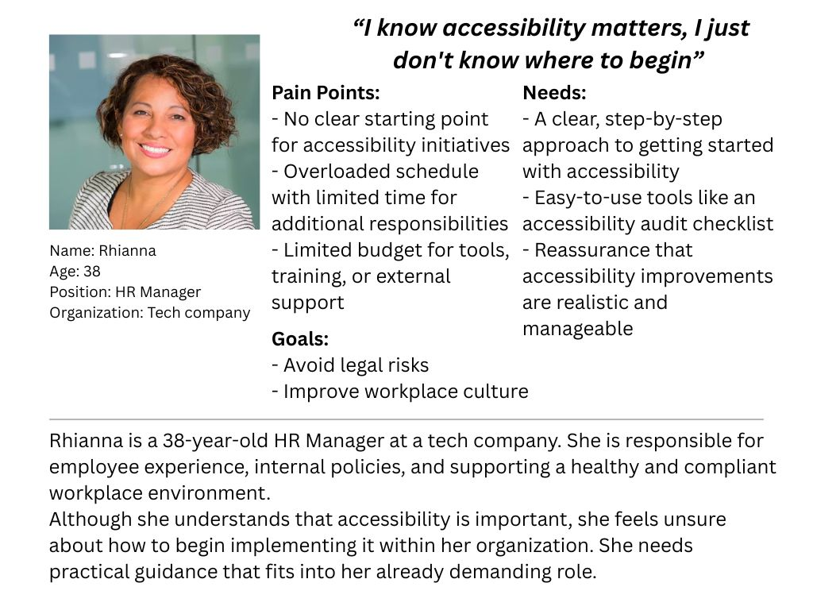
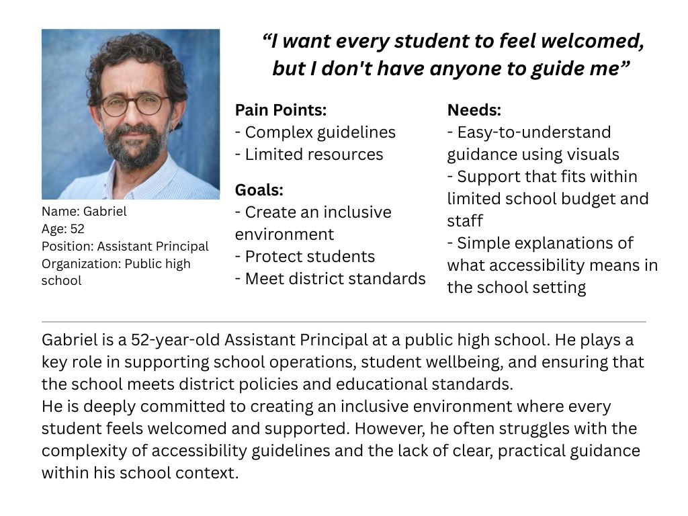

Equal Access — Group project
This nonprofit project improves accessibility and inclusion for people with disabilities by supporting organizations through training, audits, and guidance. It helps schools, small businesses, and workplaces identify barriers and implement practical accessibility improvements.

Role
Designer
Tools
- Adobe Illustrator
- Figma
- Canva
- Microsoft Teams
Coopyright
The photos of ingredients and flavors are from Unsplash.
Personas & Problems


Logo, Typography & Color palette
The design conveys that diverse people, including those with disabilities represented by eight different colors, should have equal access to the resource. The resource is placed at the center to show that it is accessible to all. The icons are inspired by those used on maps to represent people in different regions, highlighting the diversity of the audience.
We chose a primarily white background with black text to ensure that messages are presented clearly and are easy to read. For accents, we use blue, green, and orange that match our logo, guiding the user’s focus to key elements.

Social Media Campaign Mockups: LinkedIn
Based on primary and secondary personas (HR Managers/Leaders and School administrators), LinkedIn was selected as the primary platform for the social media awareness campaign.


Low-Fidelity Prototype
A low-fidelity prototype exploring the concept and basic structure of a system that collects user emails and provides an accessibility checklist.
Mid-Fidelity Prototype
A mid-fidelity prototype refining user flows and interactions for collecting user emails and delivering an accessibility checklist.

Moderated usability testing
What worked
Users understood the purpose of the website and navigated the main flow without confusion. They easily found the “Get to Checklist” action and felt comfortable submitting their information.
What didn't
Users were unsure about what to do after completing the checklist. Some expected more guidance and additional information about accessibility.
High-Fidelity Prototype
Based on testing insights, I enhanced the experience so that after users complete the accessibility checklist, they are shown a score and receive tailored recommendations for relevant accessibility resources.
Summary & Next Steps
Equal Access is a project designed to support initiatives that promote equal access for everyone, including people with disabilities, by providing an accessibility checklist.
Based on user feedback, the checklist will be improved by reducing its length and refining the content to make it more concise, clear, and easier to understand.